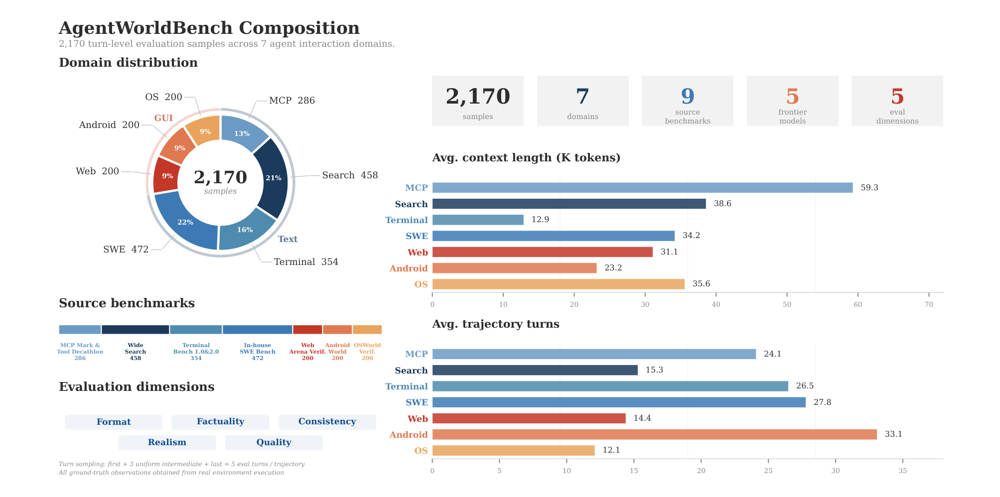
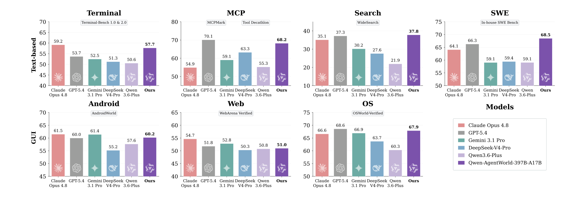
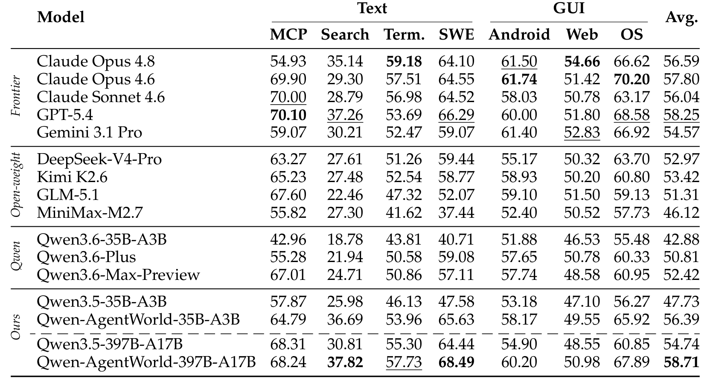

Qwen-AgentWorld
AgentWorldBench —— 评估世界模型
学习构建五维 rubric、reference-grounded LLM judge、差异化匹配标准，并解读主实验结果。
AgentWorldBench：综合 LWM 评测基准
AgentWorldBench 用于在七大智能体交互领域上评估语言世界模型。它包含 2170 个 turn-level 评测样本，来自 5 个前沿模型在 9 个已有基准上生成的轨迹。

构建原则
评测基准的质量决定了后续结论的可信度。
构建原则：
- 广泛使用的问题：所有任务查询都来自已有高质量智能体基准。
- 前沿智能体轨迹：所有轨迹由前沿模型智能体生成。
- 真实观察：每条轨迹都配有真实环境执行得到的真值观察。
- 分布外划分：训练数据与基准查询在数据源层面分开。
Source: Qwen-AgentWorld, §4.1
评测协议
AgentWorldBench 通过开放式 rubric 评估模拟质量：LLM 裁判对每个预测观察在五个维度上打分。
五维评测指标
单一分数无法区分格式错误、事实错误和一致性问题。
五维评测指标（每项 1–5 分，归一化到 0–100）：
- Format：领域结构约定（JSON schema 合规、shell 提示模式）。
- Factuality：陈述事实的正确性（文件内容、搜索结果、工具返回值）。
- Consistency：内部一致性，及与前面 turn 的一致性。
- Realism：真实环境的行为特征（响应模式、风格惯例、值合理性）。
- Quality：相对真值的完整性与简洁性。
Source: Qwen-AgentWorld, §4.2
Reference-Grounded LLM 评判
Reference-Grounded Judging
把开放式质量判断转化为事实比较，可显著降低裁判幻觉。
Reference-grounded judging：裁判同时获得真值环境观察与模型预测观察，并通过比较两者对每个维度打分。这把评测从开放式质量判断转化为事实比较，大幅压缩了裁判幻觉或误判的空间。
Source: Qwen-AgentWorld, §4.2
差异化匹配标准
不是所有内容都需要精确匹配，否则会把不可复现细节误判为错误。
差异化匹配标准：评测前先把内容分为三类：
- 确定性内容（回声输出、文件读取、计算结果）：必须精确匹配。
- 预存在环境内容（预装软件版本、轨迹未创建的文件内容）：只验证格式与合理性。
- 运行时元数据（时间戳、PID、内存地址）：只验证格式与范围。
这种三分法让裁判在不惩罚不可复现细节的前提下，奖励正确的结构与语义行为。
Source: Qwen-AgentWorld, §4.2
通过双盲图灵测试校准裁判
双盲图灵测试校准
裁判必须能区分真实观察与忠实但错误的模拟，才能给出准确 rubric 分数。
双盲图灵测试校准：给定交互历史和当前动作，裁判在随机顺序下看到两个候选观察——一个来自真实环境，一个来自世界模型——并判断哪个是真实的。图灵测试准确率高的裁判，必然关注忠实模拟与看似合理但错误模拟之间的细微差异，这正是准确 rubric 评分所需的判别能力。
Source: Qwen-AgentWorld, §4.2
主要结果与解读


| 维度 | Qwen-AgentWorld-397B-A17B | 最佳前沿基线 GPT-5.4 |
|---|---|---|
| 维度 | Qwen-AgentWorld-397B-A17B | GPT-5.4 |
| 整体平均 | 58.71 | 58.25 |
| 文本平均 | 58.07 | 56.84 |
| GUI 平均 | 59.69 | 60.47 |
练习：设计一个裁判提示
任务：按照五维框架，为 MCP 领域设计一个领域感知的 rubric 裁判提示。
要求：
- 用 MCP 领域的术语定义五个维度（Format、Factuality、Consistency、Realism、Quality）。
- 包含至少三种内容类型及其验证标准的内容类型分类表。
- 为确定性内容与非确定性内容指定差异化匹配标准。
验证标准：Factuality 维度应强调 JSON schema 合规与工具执行正确性；Consistency 维度应要求跨 turn 资源引用完整性（例如前面 turn 创建的 ID 在后面必须一致）。
完整答案应包含：
- Format：MCP 工具调用是否符合约定的 JSON 结构；返回结果是否包含预期的字段层级。
- Factuality：工具名、参数名、参数值是否正确；资源 URI、server name 是否与动作一致。
- Consistency：跨 turn 的 resource ID、user ID、parent-child 引用是否保持一致。
- Realism：错误信息风格是否符合真实 MCP server（如
Method not foundvs. 自定义错误）。 - Quality：相对真值是否完整且简洁，没有过度省略或冗余。
- 内容类型分类：
- 确定性内容：工具名、schema 字段名、由动作直接决定的结果值 → 精确匹配。 - 预存在环境内容：server 描述、预置资源摘要 → 格式与合理性验证。 - 运行时元数据：timestamp、UUID、session ID → 格式与范围验证。
Source: Qwen-AgentWorld, §4.2, Appendix D.2
---
模块小结：AgentWorldBench 通过 reference-grounded 五维 rubric 评判和差异化匹配标准评估世界模型。跨裁判一致性高（ρ = 0.92–0.99），验证了基准可靠性。Qwen-AgentWorld 在文本领域领先；GUI 差距可能来自多模态预训练优势。